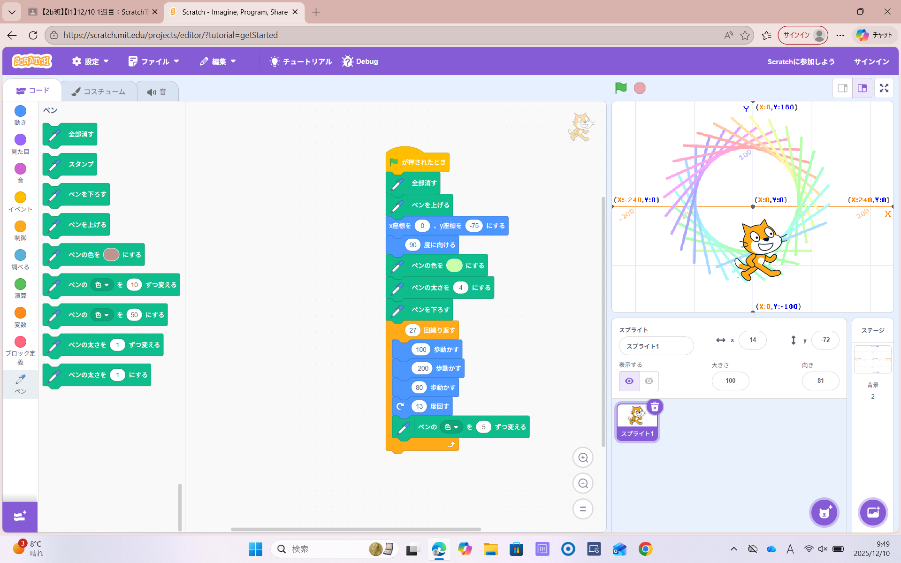
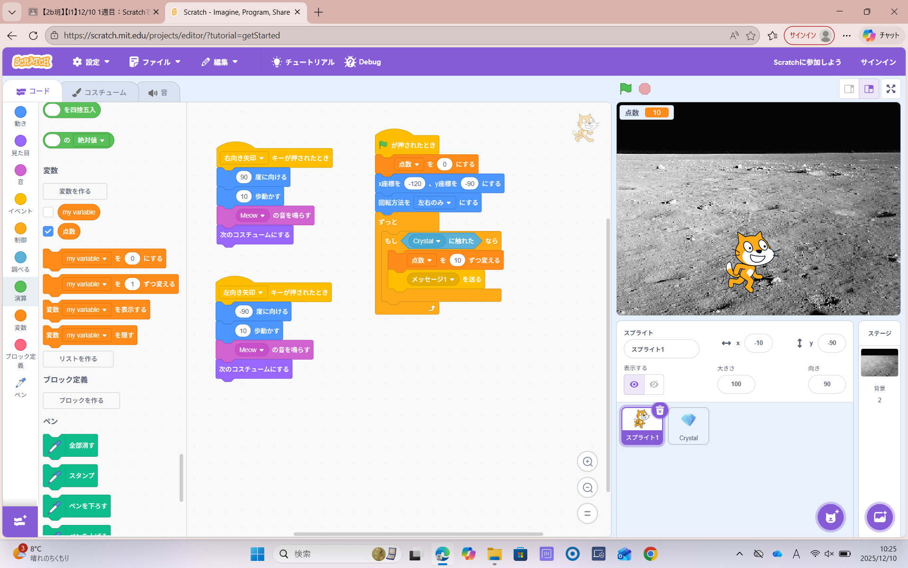

1週目のレポート ： 公大高専１年実習I-1
2b班28番 fuku
第1週目
1-1 サイエンスアート

1.内容
scratchを使ってブロックをつなぎ合わせ猫を動かすプログラムを作った。
ペン機能を使い値を変えることで歩数や角度を変えて違う形を作ることもでき、サイエンスアートを作成した。
2.感想
同じブロックを使っていてもペンの色や角度歩数の値を変えることで様々な形の図形を作れるところに面白みを感じた。
プログラムをする上でコードを書いた後、実行する前にどのような動作をするのか考えるといいと知った。
1-2 ゲーム

1.内容
背景や動きを加え、上から落ちてくるものを拾うゲームを作った。
乱数を使って落下物のスピードや位置を変え、予測できないようにして面白さを加えた。
2.感想
乱数を加えることで一定ではない動きを楽しむことができたので、次は乱数の値の範囲を広げたりと値を変えてゲームを難易度別に作ってみたいと思った。 また、落下物の個数を増やしたり当たってはいけないようなバージョンにしたりとアレンジの幅が広く、奥深いなと感じた。
1-3 ホームページ作成
私のホームページ
1.内容
自分のホームページを作成した。
先生から配られた元から制作されていたコードに自分で考えた文章、制作情報などを記入し、制作したホームページをスマホからでも閲覧できるようにした
。 2.感想
１つのウェブサイトを作る為に多くのコードを書く必要があることが分かった。
しかし、同じ記号が何回も使われていたり、言語ごとにプログラムのコードが違うことが分かったので、全部一から作ることに挑戦してみたいと思った。
各ページへのリンク
1週目のレポート
2週目のレポート
3週目のレポート
私のホームページ